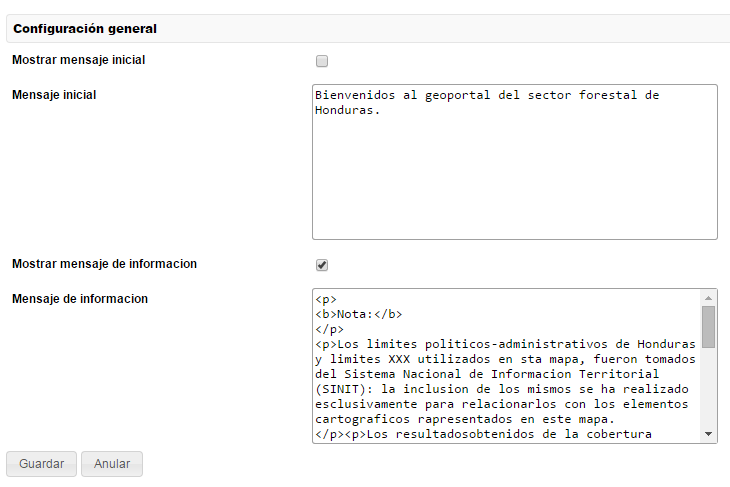

Permite de configurar los parámetros relativos al mensaje inicial y al mensaje de información.

Configuracion de los parametros relativos a los mensajes inicial y de informacion
Permite activar o desactivar la visualización del mensaje inicial.
Este campo define el texto del mensaje inicial.
Nota: como el texto definido aquí se va a colocar en el DOM HTML, este texto puede ser en formato HTML. Por ejemplo se pueden utilizar los tag <p> (párrafos), <b> (bold), etcétera.
Permite activar o desactivar la visualización del mensaje de información.
Este campo define el texto del mensaje de información. Este valor es utilizado en dos puntos del Geoportal:
Nota: como el texto definido aquí se va a colocar en el DOM HTML, este texto puede ser en formato HTML. Por ejemplo se pueden utilizar los tag <p> (párrafos), <b> (bold), etcétera.